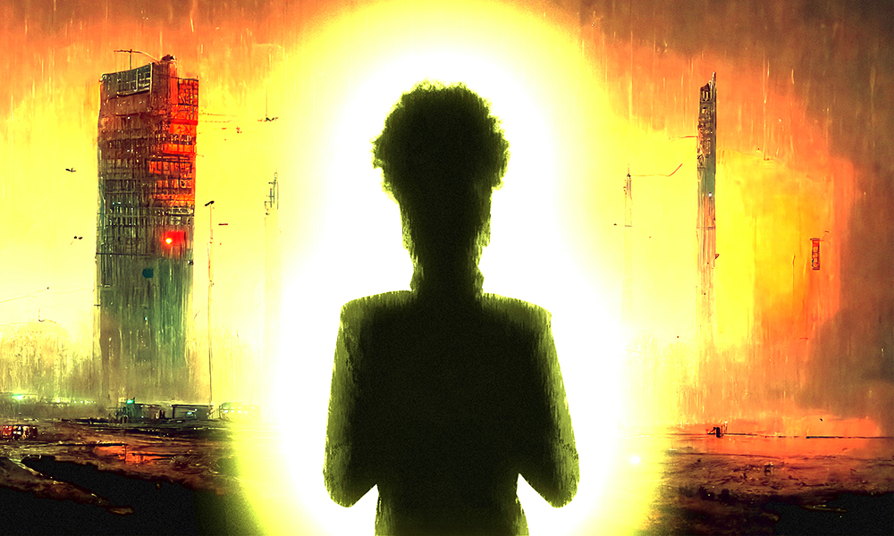
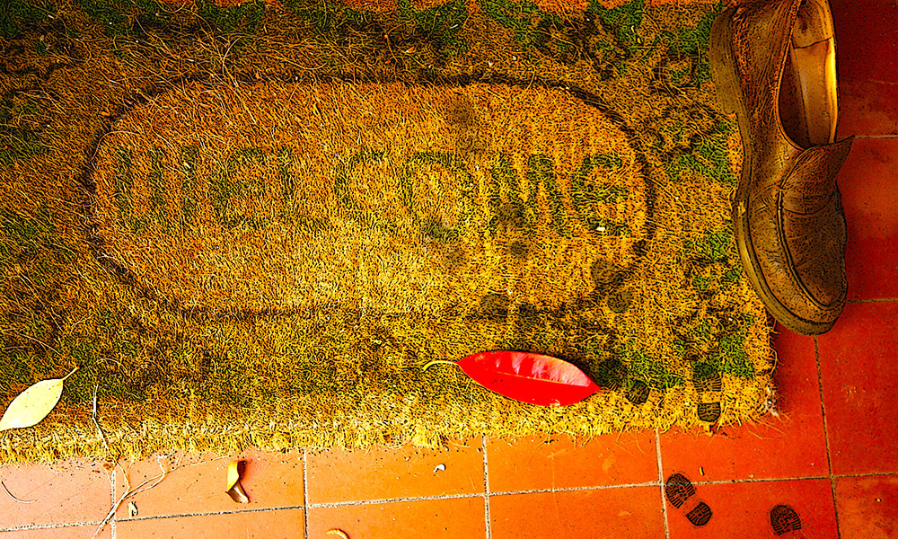

Some people consider the fantastical genres to be non-overlapping magisteria: sci-fi is sci-fi; fantasy, fantasy; horror, horror. Others are not merely comfortable with a little bit of bleed-through, they positively revel in it. In our first story Elena Sichrovsky is selling you what looks like straightforward science fiction. Don't be deceived. But do be warned, this one is not for the faint-hearted.

Part One of the now inevitable Mythaxis Thematic Double Bill. Jude Clee launches us into a whirlwind romance, sweeps us up with anticipation for a lucky someone's Best Life Ever, sucks us into the inevitable troubles in paradise, and then drops us off the cliff of hell is other people.
And now sit back for your second speculatively matrimonial feature: Masha Kisel takes us into a pretty near future that feels pretty plausible, unfortunately, be it in the struggle of living day-to-day within a failing ecosphere, or of relating to people as we let technology come between us.

The notion of the multiverse has been popular in sf for much longer than the current cinematic obsession – and no surprise, because it offers such ripe opportunities for invention. Chisom Umeh super-collides witchcraft and technology to deliver a painful reminder that we rarely get what we expect, and getting what we ask for can be a curse, not a blessing.

At the end of an often emotionally heavy selection of stories, why not a dash of sugar to help all the bitter medicine go down? Rebecca Birch gives us a short, sweet tale of making a new house into a home – not by starting a family, but by making a few new friends.
Mythaxis has been proud to feature stories penned by authors from a wide variety of countries in the past, but as an English-language zine it's fair to say that we've barely scratched the surface of what could be done to expose readers to genre writing from different cultures. Step forward Francesco Verso, man of world fiction.

Your editor has been a fan of Bill Ryan's review writing for longer than the man himself has been aware of it. His passion for literature and cinema is particularly strong in the crime and horror genres, so it's a great pleasure to be able to welcome him to Mythaxis as our second periodic fiction reviewer. Which shall it be, I wonder…

As the issue draws to a close, we once again invite our readers to use us as a springboard to dive into the fiction offered by other interesting online zines out there. Three new stories from three different publications, all released in the last three months and all very much worth a little of your time.

For about a year, the team at Mythaxis has experimented with sophisticated software tools in an attempt to understand – and maybe predict – what makes a story catch the editor's eye. So far we've discussed this in the context of the popular/unpopular theme of the day, Artificial Intelligence – but AI is a delicate subject when it comes to writing fiction. So let's take a look at exactly what we got up to.